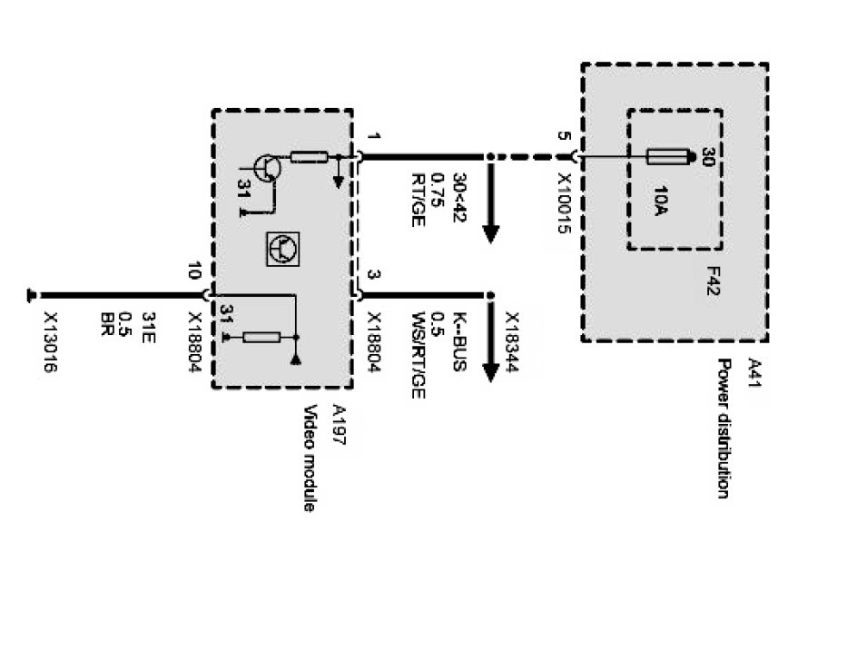

Operation CHARM
: Car repair manuals for everyone.
Home
>>
BMW
>>
2007
>>
X3 3.0si (E83) L6-3.0L (N52K)
>>
Repair and Diagnosis
>>
Diagrams
>>
Electrical Diagrams
>>
Body
>>
Audio, Video and Navigation
>>
Navigation With CID (NAV Navigation Computer With CID Central Information Display)
>>
Location Display
>>
Video Module, Supply
Video Module, Supply
Video module supply:
